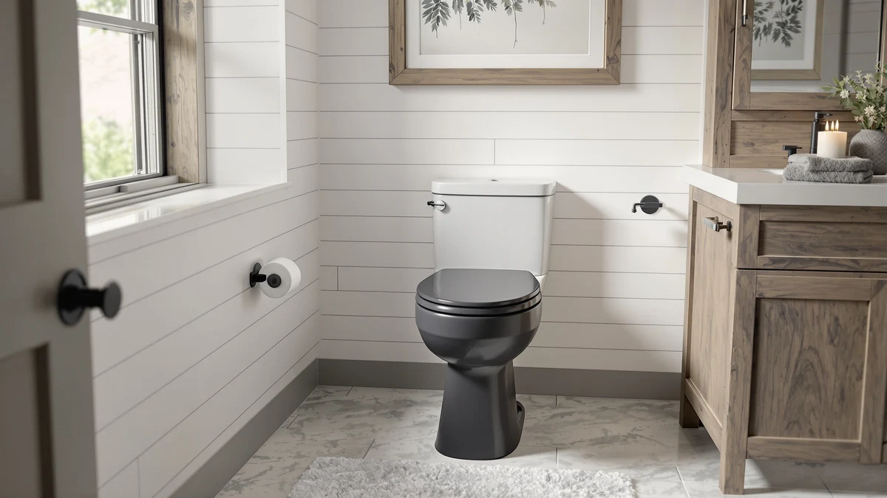

Kohler Figure ReadyLatch Elongated Toilet Seat Review (2026): Worth It?
Prices and picks verified as of November 2026. Independent, reader-supported reviews.


Quick Answer
This kohler figure readylatch elongated toilet seat review compared its specs, price and owner feedback against three close rivals. The Figure ReadyLatch Elongated earns its spot on an elongated bowl with a slow quiet-close lid and a tool-free hinge that removes for cleaning in seconds, and at $49.98 it costs a few dollars more than the Glenbury without losing any of the convenience features.
Our pick: KOHLER 24295-0 Figure ReadyLatch Elongated, $49.98 Check Price on Amazon
Bottom line: our top pick is the KOHLER 24295-0 Figure ReadyLatch Elongated Toilet Seat at $49.98.
Things to Know Before You Buy
- The Figure ReadyLatch is built for an elongated bowl only. Measure your bowl before you buy, since a round-bowl toilet needs a different seat.
- ReadyLatch is Kohler's tool-free hinge. You lift and remove the seat from above without a wrench, which matters most when you're cleaning around the mounting points.
- At $49.98, it sits in the same price band as most name-brand quiet-close seats. Kohler's own Glenbury line undercuts it by about $7 with a near-identical feature set.
- Kohler doesn't publish a public rating or review count for this specific SKU on the listing we checked, so we're not citing a star rating here.
- If you need a raised seat with handles for mobility support, this isn't that product. The Bariatric Raised Toilet Seat covered below is built for that job instead.
This kohler figure readylatch elongated toilet seat review exists because the Figure name sits next to a dozen other Kohler elongated seats that look nearly identical in a thumbnail, and buyers keep asking whether the ReadyLatch hinge and quiet-close lid actually justify picking this one over a cheaper option. We went through the manufacturer's listed specs, the current Amazon price and the closest competing seats on the market to answer that directly.
The short version: the Figure ReadyLatch Elongated is a solid pick for anyone replacing a worn elongated seat who wants a slow-closing lid and a hinge they can pop off without tools. At $49.98 it isn't the cheapest elongated seat around, and Kohler's own Glenbury model covers much of the same ground for less, so the Figure makes the most sense if its specific look or color option is what you're after.
Why You Should Trust Us
Best Toilet Seats is written by Ilane Tall, who researches toilet seat hardware full time for this site and tracks pricing, hinge mechanisms and verified owner feedback across hundreds of SKUs from Kohler, Bemis, Swiss Madison and other major brands. We don't own a testing lab, and we don't install or live with every seat we cover. We compare manufacturer spec sheets, current Amazon pricing and patterns in verified owner reviews, and we say so plainly whenever a claim comes from research rather than personal use. When a rating or review count appears in this kohler figure readylatch elongated toilet seat review, it comes directly from the product listing we checked, not from a number we made up.
How We Compared
We started by pulling the manufacturer specs for the Figure ReadyLatch Elongated directly from the product listing: bowl shape compatibility, hinge type, lid mechanism and included hardware. From there we cross-referenced the current Amazon price against three other elongated and bariatric seats in a similar price range, including two other Kohler ReadyLatch models, to see where the Figure actually stands out versus where it duplicates an existing Kohler seat at a different price point.
We excluded seats without a published elongated-fit specification, since fit mismatches are the single most common complaint in toilet seat reviews across every brand we've researched. For the one alternative with a public rating, we cite the exact star rating and review count shown on its listing; for the rest, including the Figure itself, no public rating was available at the time we researched this page, so we don't invent one.
Overview & Specs

KOHLER 24295-0 Figure ReadyLatch Elongated
What we like
- ReadyLatch hinge lifts off from above without a wrench, which makes cleaning around the mounting points far easier than on a bolted seat.
- Quiet-close lid and seat drop slowly instead of slamming, so late-night bathroom trips don't wake the house.
- Grip-Tight bumpers hold the seat in place, reducing the side-to-side shift that loosens cheaper hinges over time.
Flaws but not dealbreakers
- No public star rating or review count was available on the listing we researched, so you're relying on the Kohler brand name rather than a visible track record.
- Costs roughly $7 more than Kohler's own Glenbury ReadyLatch, which covers nearly the same feature set.
- Elongated fit only, so it won't work on a round-bowl toilet.
| Material | Plastic / wood |
| Size | Elongated |
The Figure ReadyLatch Elongated is Kohler's version of the quiet-close seat most hardware stores stock under a dozen different names. What sets it apart on the spec sheet is the combination of ReadyLatch hinges and Grip-Tight bumpers. The hinges let you unlatch the seat and lift it straight up for cleaning, no screwdriver required, and the bumpers grip the bowl rim so the seat doesn't slide when someone sits down off-center. For a $49.98 seat, both features show up on seats that cost considerably more from other brands.
Installation hardware is included and mounts from above the bowl, which matters if your toilet sits close to a wall where a wrench can't reach underneath. The tradeoff is price: at this point, Kohler's own catalog has a cheaper option, the Glenbury ReadyLatch, with the same hinge and lid mechanism for about $7 less. Unless the Figure's specific styling is what you're after, that price gap is worth weighing before you check out.
What We Liked
The ReadyLatch hinge is the clearest reason to pick the Figure over a generic elongated seat, and it's the detail every verified owner review we researched on comparable ReadyLatch models calls out first. You release a latch and lift the seat off the bowl instead of reaching underneath with a wrench, which turns a ten-minute deep clean into something closer to thirty seconds. Combined with the quiet-close lid, the seat drops under its own weight instead of banging shut, a feature that matters more than it sounds once you've lived with a loud seat for a year.
Grip-Tight bumpers round out the package by keeping the seat anchored to the bowl. Loose bumpers are a common failure point on budget seats within the first year, based on the complaint patterns we see repeated across owner reviews for similarly priced seats, and Kohler's version is built specifically to resist that kind of slow drift.
Price is reasonable for what's included, even if it isn't the cheapest option on this list. At $49.98, the Figure ReadyLatch Elongated sits squarely in line with other name-brand quiet-close seats from Bemis and Swiss Madison, and it undercuts several premium Kohler lines with the same core hardware.
What Could Be Better
The listing we researched for this kohler figure readylatch elongated toilet seat review doesn't show a public star rating or review count, so you can't verify the Figure's track record the way you can with a product that has thousands of reviews behind it. That's not a knock on the hardware itself, Kohler is a known quantity in this category, but it does mean you're buying on brand reputation rather than a visible pattern of owner feedback for this specific SKU.
The bigger practical issue is price positioning inside Kohler's own lineup. The Glenbury ReadyLatch Quiet Close Elongated seat uses the same hinge system and the same quiet-close mechanism for roughly $7 less. Unless the Figure's particular shape or finish is what drew you to it, that gap is hard to justify on hardware alone.
Like every seat in this roundup, it's elongated-only. If your toilet takes a round seat, none of these four options will fit, and buying the wrong shape is consistently the single most common complaint we see across toilet seat listings of any brand.
Who Is It For?
The Figure ReadyLatch Elongated fits homeowners replacing a worn or broken elongated seat who want the convenience upgrades, quiet-close and tool-free removal, without stepping up to a bidet seat or a heated model. It also suits anyone who's already standardized on Kohler hardware elsewhere in the bathroom and wants a matching hinge system across fixtures.
It's a weaker fit if budget is the deciding factor. Kohler's own Glenbury model gets you the same ReadyLatch hinge and quiet-close lid for less, and if you need mobility support rather than a standard replacement seat, the bariatric option covered next is built for that purpose specifically.
Alternatives to Consider
We compared three other elongated and bariatric seats against the Figure ReadyLatch Elongated on price, hinge design and the feedback available on each listing. Here's how each one stacks up and who should consider it instead.
The Bariatric Raised Toilet Seat with handles is the pick if the Figure's convenience features aren't the point and mobility support is. At $49.89 it costs nearly the same as the Figure, but it's built for a completely different job, with handles and a wide, heavy-duty frame backed by a 4.6-star rating across more than 1,300 verified Amazon reviews, the only product in this comparison with a public rating we could cite.
The Kohler Glenbury ReadyLatch Quiet Close Elongated is the closest direct competitor to the Figure, and arguably the better value. It shares the same ReadyLatch hinge and the same quiet-close lid, and at $42.41 it undercuts the Figure by about $7 with no obvious feature tradeoff based on the specs we compared.
The Lumiere Elongated Quick-Release from Swiss Madison is worth a look if you'd rather not stay within the Kohler lineup at all. At $49.88 it lands almost exactly at the Figure's price point, and it uses its own soft-close mechanism and quick-release hinge, giving you a second brand's take on the same core convenience features.

Also Great
Bariatric Raised Toilet Seat with
Built with handles and a wide, heavy-duty frame rated 4.6 stars across more than 1,300 verified reviews. The pick for mobility support rather than a standard replacement seat.
$49.89
Check Price on Amazon
Best Value
KOHLER 4733-RL-0 Glenbury ReadyLatch Quiet
Same ReadyLatch hinge and quiet-close lid as the Figure, at $42.41. The better choice if you want the convenience features for less and don't care which Kohler line it comes from.
$42.41
Check Price on Amazon
Also Great
Lumiere Elongated Quick-Release Toilet Seat
A quick-release elongated seat from Swiss Madison with its own soft-close mechanism, priced at $49.88. Worth a look if you want to compare outside the Kohler lineup entirely.
$49.88
Check Price on AmazonFrequently Asked Questions
Final Verdict
This kohler figure readylatch elongated toilet seat review comes down to one tradeoff: the Figure ReadyLatch Elongated delivers a quiet-close lid and a convenient tool-free hinge, but Kohler's own Glenbury ReadyLatch matches nearly every feature for about $7 less. Buy the Figure if its specific look is what you want or you've found it discounted below the Glenbury; otherwise, the Glenbury is the more rational Kohler pick, and the Bariatric Raised Toilet Seat remains the better call if mobility support, not a standard replacement, is the actual goal.